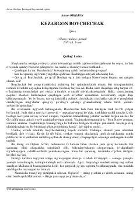

KBNavro'zoyni izlab kezuvchi kezargon Boychechakning sarguzashtlari haqidagi qissa.
Bu qissada qishning oxirgi kechasi – Oytug'di paytida unib chiqib, Navro'zoyni izlab kezuvchi kezargon Boychechak va jonivorlarning sarguzashtlari hikoya qilinadi. Asar tabiat go'zalligi, bahor nafasi va ezgulik tushunchalarini o'ziga xos tarzda ochib beradi. Anvar Obidjon qalamiga mansub mazkur asar kitobxonga ko'klam zavqini ulashadi.